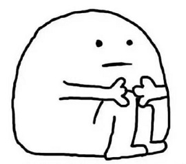

WELCOME TO TRAVEL
I will be recommending places that you should travel to in China. (Do not ask why my page is 90% about China, it's because I know more Chinese things) In China there are places that you might see hundred thousands of people in one location if you do not choose the correct places and time. For example, the Forbidden City. It might look like this when there are a lot of people.
Or it can look like this when there are less people(now there are limited number of tickets everyday)
Forbidden City
Since I already mentioned the Forbidden City then the first place I recommend everyone to visit is the Forbidden City. The Forbidden City in Beijing is the imperial palace of China during the Ming and Qing Dynasties . The Forbidden City in Beijing is centered on three halls, covering an area of about 720,000 square meters, with a construction area of about 150,000 square meters, more than 70 large and small palaces and more than 9,000 houses. There are limited of tickets everyday so if you want to go please book tickets ahead of time.
Emperor Qinshihuang's Mausoleum Site Museum
Qin Shi Huang Mausoleum Museum is located in Shaanxi Province in Xi'an Lintong District , is the Terracotta Warriors Museum based, Qin Shi Huang Mausoleum Park ( Laguna Hills Park ) as the basis of a large site museum; also to Qin Shi Huang Mausoleum and many Horses is The main body, based on the protection and display of the archaeological site itself and its environment, is a public cultural space that integrates multiple functions such as education, scientific research, tourism, and leisure. Those warriors might look small but there are tall! I went in 2019 when I was 175cm and I look short beside them...(I'm shorter than warriors that are made of rocks...)

Huangshan Scenic Area
Huangshan, one of the top ten famous mountains in China, is the best mountain in the world. Located in Anhui Province, south of Huangshan City territory, there are 72 peaks, the main peak of Lotus Peak elevation of 1864 meters, the Bright Summit , Heavenly Capital said the three main peaks of Huangshan, one of 36 major peaks. Huangshan is a symbol of tourism in Anhui and the only mountain scenery in China's top ten scenic spots. It is now a dual heritage of world culture and nature , a world geological park , a national AAAAA-level tourist attraction , a national scenic spot, and a national civilized scenic tourist area demonstration site. Please be careful you would not like to fall of from there.
Great Wall of China
The Great Wall of China just amazing! Great Wall (The Great Wall), also known as the Great Wall, the ancient Chinese military fortifications , is a tall, strong and continuous long- Yuan , for every action limit of Diji. The Great Wall is not a purely isolated city wall, but a defense system with the city wall as the main body and a large number of cities, barriers, pavilions, and landmarks. This wall was made by people, 0 machines were involved!!! If you would like to climb it, please be ready to walk 20000+ steps

All these places above I recommend to wear Running shoes(from my own experiences) also be ready to take picture. Bring water and food. The water at these places are just expensive, not worth it if you can buy a bottled water with ￥1 in the city.
Chengdu Research Base of Giant Panda Breeding
Chengdu Research Base of Giant Panda Breeding is one of the main research bases of the Chinese government to implement ex-situ conservation projects for endangered wild animals such as giant pandas , and is a national AAAA-level tourist attraction. There are types of Panadas and they are ADORABLE!